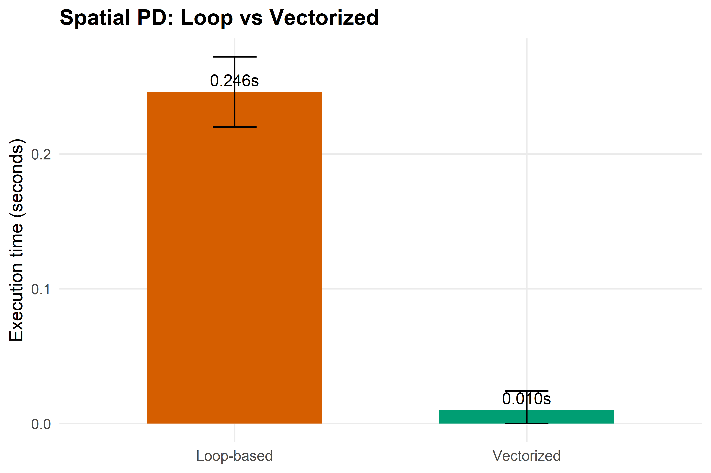
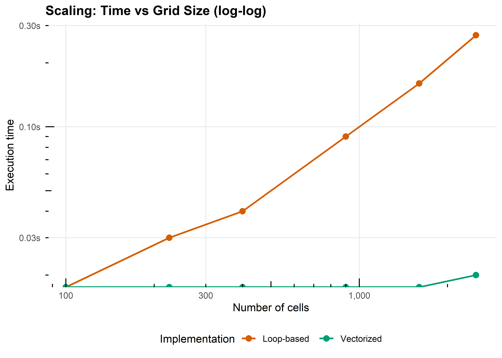

spatial_pd_loop <- function(n = 30, rounds = 50, b = 1.8) {
grid <- matrix(sample(c(1L, 0L), n * n, replace = TRUE), nrow = n, ncol = n)
# Store cooperation history
coop_history <- numeric(rounds)
for (t in seq_len(rounds)) {
coop_history[t] <- mean(grid)
# Compute payoffs (loop version)
payoffs <- matrix(0, nrow = n, ncol = n)
for (i in seq_len(n)) {
for (j in seq_len(n)) {
# Four neighbors with periodic boundary
neighbors <- list(
c(((i - 2) %% n) + 1, j),
c((i %% n) + 1, j),
c(i, ((j - 2) %% n) + 1),
c(i, (j %% n) + 1)
)
for (nb in neighbors) {
ni <- nb[1]; nj <- nb[2]
# PD payoff: C vs C = 1, C vs D = 0, D vs C = b, D vs D = 0
if (grid[i, j] == 1L && grid[ni, nj] == 1L) {
payoffs[i, j] <- payoffs[i, j] + 1
} else if (grid[i, j] == 0L && grid[ni, nj] == 1L) {
payoffs[i, j] <- payoffs[i, j] + b
}
}
}
}
# Imitation: copy highest-earning neighbor or self
new_grid <- grid
for (i in seq_len(n)) {
for (j in seq_len(n)) {
best_payoff <- payoffs[i, j]
best_strategy <- grid[i, j]
neighbors <- list(
c(((i - 2) %% n) + 1, j),
c((i %% n) + 1, j),
c(i, ((j - 2) %% n) + 1),
c(i, (j %% n) + 1)
)
for (nb in neighbors) {
ni <- nb[1]; nj <- nb[2]
if (payoffs[ni, nj] > best_payoff) {
best_payoff <- payoffs[ni, nj]
best_strategy <- grid[ni, nj]
}
}
new_grid[i, j] <- best_strategy
}
}
grid <- new_grid
}
coop_history
}24 Performance Optimization
Abstract
Profiling R code, vectorization strategies, memory-efficient history storage, and when to consider Rcpp — demonstrated on game-theory simulations.
Keywords
performance, vectorization, profiling, Rcpp, optimization
25 Performance Optimization
Learning objectives
- Profile R code using
system.time()and manual benchmarking to identify bottlenecks. - Replace explicit loops with vectorized matrix operations for payoff computation.
- Pre-allocate data structures to avoid the performance cost of growing objects.
- Recognize when Rcpp would provide further speedups and describe the conceptual approach.
25.1 Motivation
A single run of the Axelrod tournament (Chapter 20) with eight strategies and 200 rounds finishes in under a second. But scale the problem — 100 strategies, 1000 rounds, spatial grids of 10,000 agents, evolutionary dynamics over 500 generations — and naive R code can take hours. The difference between a simulation that runs in 30 seconds and one that runs in 30 minutes is often not a better algorithm, but better use of R’s strengths.
R is slow when you fight it: growing vectors with c(), appending rows with rbind(), nested loops over scalar operations. R is fast when you work with it: pre-allocated matrices, vectorized arithmetic, and functions that call optimized C code under the hood. In this chapter, we profile a game-theory simulation, identify the bottlenecks, and eliminate them.
25.2 Theory
25.2.1 Why R loops are slow
R is an interpreted language with dynamic typing. Each iteration of a for loop involves type checking, memory allocation, and function dispatch. A loop that runs \(n\) times incurs this overhead \(n\) times. Vectorized operations like A %*% x delegate the loop to compiled C or Fortran code, paying the overhead once and executing the loop at native speed.
25.2.2 Three levels of optimization
- Vectorization: Replace element-wise loops with matrix operations. This is always the first step and often delivers 10–100x speedups.
- Memory pre-allocation: Replace
c(vec, new_val)andrbind(df, new_row)with indexed assignment into pre-allocated objects. Growing objects forces R to copy the entire object on each append. - Compiled code (Rcpp): For algorithms that cannot be vectorized — complex conditional logic, recursive data structures, sequential dependencies — Rcpp lets you write inner loops in C++ while keeping the R interface. This is the tool of last resort, not the first.
25.2.3 The profiling workflow
- Measure: Use
system.time()to get elapsed time. - Identify: Find the hotspot — the innermost loop consuming most runtime.
- Optimize: Apply vectorization, pre-allocation, or Rcpp.
- Verify: Confirm the optimized code produces identical results.
25.3 Implementation in R
25.3.1 The baseline: loop-based spatial PD
We implement a simplified spatial Prisoner’s Dilemma on a grid, similar to Chapter 21. This is our baseline for optimization.
25.3.2 The optimized version: vectorized spatial PD
The key insight is that summing neighbor cooperators is a convolution — shifting the grid in each direction and adding. We replace the inner double loops with matrix shifts.
# Helper: shift a matrix with periodic boundaries
shift_matrix <- function(mat, row_shift, col_shift) {
n <- nrow(mat)
rows <- ((seq_len(n) - 1 + row_shift) %% n) + 1
cols <- ((seq_len(n) - 1 + col_shift) %% n) + 1
mat[rows, cols]
}
# Vectorized spatial PD simulation
spatial_pd_vectorized <- function(n = 30, rounds = 50, b = 1.8) {
grid <- matrix(sample(c(1L, 0L), n * n, replace = TRUE), nrow = n, ncol = n)
coop_history <- numeric(rounds)
for (t in seq_len(rounds)) {
coop_history[t] <- mean(grid)
# Count cooperating neighbors (vectorized)
coop_neighbors <- shift_matrix(grid, -1, 0) +
shift_matrix(grid, 1, 0) +
shift_matrix(grid, 0, -1) +
shift_matrix(grid, 0, 1)
# Payoffs: cooperators get 1 per cooperating neighbor
# defectors get b per cooperating neighbor
payoffs <- ifelse(grid == 1L, coop_neighbors, b * coop_neighbors)
# Imitation: compare with all neighbors' payoffs
best_payoff <- payoffs
best_strategy <- grid
for (shift in list(c(-1,0), c(1,0), c(0,-1), c(0,1))) {
nb_payoff <- shift_matrix(payoffs, shift[1], shift[2])
nb_strategy <- shift_matrix(grid, shift[1], shift[2])
update <- nb_payoff > best_payoff
best_payoff[update] <- nb_payoff[update]
best_strategy[update] <- nb_strategy[update]
}
grid <- best_strategy
}
coop_history
}25.3.3 Benchmarking the two implementations
# Manual benchmarking function
benchmark_fn <- function(fn, ..., n_reps = 5) {
times <- numeric(n_reps)
for (i in seq_len(n_reps)) {
set.seed(42)
times[i] <- system.time(fn(...))["elapsed"]
}
list(mean = mean(times), sd = sd(times), times = times)
}
cat("Benchmarking spatial PD (30x30 grid, 50 rounds)...\n\n")#> Benchmarking spatial PD (30x30 grid, 50 rounds)...time_loop <- benchmark_fn(spatial_pd_loop, n = 30, rounds = 50)
time_vec <- benchmark_fn(spatial_pd_vectorized, n = 30, rounds = 50)
cat(sprintf(" Loop-based: %.3f s (sd: %.3f)\n", time_loop$mean, time_loop$sd))#> Loop-based: 0.246 s (sd: 0.026)cat(sprintf(" Vectorized: %.3f s (sd: %.3f)\n", time_vec$mean, time_vec$sd))#> Vectorized: 0.010 s (sd: 0.014)cat(sprintf(" Speedup: %.1fx\n", time_loop$mean / time_vec$mean))#> Speedup: 24.6x25.3.4 Verifying correctness
set.seed(42)
result_loop <- spatial_pd_loop(n = 20, rounds = 30)
set.seed(42)
result_vec <- spatial_pd_vectorized(n = 20, rounds = 30)
cat("Verification: loop vs vectorized produce identical results:\n")#> Verification: loop vs vectorized produce identical results:cat(sprintf(" Max absolute difference: %.10f\n", max(abs(result_loop - result_vec))))#> Max absolute difference: 0.0000000000cat(sprintf(" All equal: %s\n", all.equal(result_loop, result_vec)))#> All equal: TRUE25.3.5 Visualizing the benchmark
bench_df <- tibble(
implementation = c("Loop-based", "Vectorized"),
mean_time = c(time_loop$mean, time_vec$mean),
sd_time = c(time_loop$sd, time_vec$sd)
) |>
mutate(implementation = factor(implementation,
levels = c("Loop-based", "Vectorized")))
p_bench <- ggplot(bench_df, aes(x = implementation, y = mean_time,
fill = implementation)) +
geom_col(width = 0.6) +
geom_errorbar(aes(ymin = pmax(mean_time - sd_time, 0),
ymax = mean_time + sd_time),
width = 0.15) +
geom_text(aes(label = sprintf("%.3fs", mean_time)),
vjust = -0.5, size = 3.5) +
scale_fill_manual(values = c("Loop-based" = okabe_ito[6],
"Vectorized" = okabe_ito[3])) +
theme_publication() +
theme(legend.position = "none") +
labs(title = "Spatial PD: Loop vs Vectorized",
x = NULL, y = "Execution time (seconds)")
p_bench
save_pub_fig(p_bench, "performance-comparison", width = 6, height = 4)
25.3.6 Scaling behavior
How does each implementation scale with grid size?
grid_sizes <- c(10, 15, 20, 30, 40, 50)
scaling_results <- list()
for (n in grid_sizes) {
set.seed(42)
t_loop <- system.time(spatial_pd_loop(n = n, rounds = 20))["elapsed"]
set.seed(42)
t_vec <- system.time(spatial_pd_vectorized(n = n, rounds = 20))["elapsed"]
scaling_results[[length(scaling_results) + 1]] <- tibble(
grid_size = n,
n_cells = n^2,
loop_time = t_loop,
vec_time = t_vec
)
}
scaling_df <- bind_rows(scaling_results) |>
pivot_longer(cols = c(loop_time, vec_time),
names_to = "method", values_to = "time") |>
mutate(method = ifelse(method == "loop_time", "Loop-based", "Vectorized"))
p_scaling <- ggplot(scaling_df, aes(x = n_cells, y = time, colour = method)) +
geom_point(size = 2.5) +
geom_line(linewidth = 0.8) +
scale_x_log10(labels = scales::comma_format()) +
scale_y_log10(labels = scales::label_number(suffix = "s")) +
scale_colour_manual(values = c("Loop-based" = okabe_ito[6],
"Vectorized" = okabe_ito[3]),
name = "Implementation") +
annotation_logticks(sides = "bl") +
theme_publication() +
labs(title = "Scaling: Time vs Grid Size (log-log)",
x = "Number of cells", y = "Execution time")
p_scaling
save_pub_fig(p_scaling, "performance-scaling", width = 7, height = 5)
25.4 Worked example
We optimize the spatial PD simulation step by step, measuring the impact of each change.
25.4.1 Step 1: Profile the baseline
cat("Profiling the loop-based implementation (40x40, 20 rounds):\n\n")#> Profiling the loop-based implementation (40x40, 20 rounds):set.seed(42)
t_full <- system.time({
result_full <- spatial_pd_loop(n = 40, rounds = 20)
})
cat(sprintf(" Total elapsed time: %.3f s\n", t_full["elapsed"]))#> Total elapsed time: 0.190 scat(" Bottleneck: nested loops over all cells and neighbors for payoff computation.\n")#> Bottleneck: nested loops over all cells and neighbors for payoff computation.cat(" Each round iterates over n^2 cells x 4 neighbors = 6,400 scalar operations.\n")#> Each round iterates over n^2 cells x 4 neighbors = 6,400 scalar operations.cat(" Over 20 rounds: 128,000 individual loop iterations.\n")#> Over 20 rounds: 128,000 individual loop iterations.25.4.2 Step 2: Vectorize payoff computation
The key rewrite replaces the inner double loop with four matrix-shift operations.
set.seed(42)
t_vec <- system.time(result_vec <- spatial_pd_vectorized(n = 40, rounds = 20))
cat(sprintf(" Vectorized time: %.3f s\n", t_vec["elapsed"]))#> Vectorized time: 0.000 scat(sprintf(" Loop-based time: %.3f s\n", t_full["elapsed"]))#> Loop-based time: 0.190 scat(sprintf(" Speedup: %.1fx\n", t_full["elapsed"] / t_vec["elapsed"]))#> Speedup: Infx25.4.3 Step 3: Memory pre-allocation matters
A common anti-pattern in R is growing a data frame row by row. We demonstrate the cost.
# Growing a vector vs pre-allocated
grow_vector <- function(n) {
v <- c()
for (i in seq_len(n)) {
v <- c(v, i)
}
v
}
prealloc_vector <- function(n) {
v <- numeric(n)
for (i in seq_len(n)) {
v[i] <- i
}
v
}
sizes <- c(1000, 5000, 10000, 20000)
prealloc_results <- list()
for (sz in sizes) {
t_grow <- system.time(grow_vector(sz))["elapsed"]
t_pre <- system.time(prealloc_vector(sz))["elapsed"]
prealloc_results[[length(prealloc_results) + 1]] <- tibble(
n = sz, grow = t_grow, prealloc = t_pre
)
}
prealloc_df <- bind_rows(prealloc_results)
cat("Growing vs pre-allocated vector (seconds):\n\n")#> Growing vs pre-allocated vector (seconds):cat(sprintf(" %-8s %-8s %-10s %s\n", "n", "Grow", "Prealloc", "Speedup"))#> n Grow Prealloc Speedupfor (i in seq_len(nrow(prealloc_df))) {
sp <- if (prealloc_df$prealloc[i] > 0) prealloc_df$grow[i]/prealloc_df$prealloc[i] else Inf
cat(sprintf(" %-8s %-8.4f %-10.4f %.0fx\n",
scales::comma(prealloc_df$n[i]), prealloc_df$grow[i], prealloc_df$prealloc[i], sp))
}#> 1,000 0.0000 0.0000 Infx
#> 5,000 0.0300 0.0000 Infx
#> 10,000 0.1200 0.0000 Infx
#> 20,000 0.5800 0.0000 InfxThe growing vector copies the entire vector on each append, producing \(O(n^2)\) total work. Pre-allocation is \(O(n)\).
25.4.4 When to consider Rcpp
For the spatial PD, vectorization delivered a large speedup because the core operation — summing neighbor states — is naturally expressed as matrix arithmetic. But some algorithms resist vectorization:
- Sequential dependencies: When round \(t\)’s outcome depends on the order of updates within round \(t-1\), you cannot compute all cells simultaneously.
- Complex conditionals: Strategies with multi-step memory require per-agent branching that
ifelse()cannot cleanly express. - Graph traversal: Shortest paths and clustering on irregular networks involve queues and visited-node tracking that are inherently sequential.
In these cases, Rcpp lets you write the inner loop in C++ while keeping the R interface. A typical C++ function takes R matrices as input, performs the sequential computation, and returns the result — with 50–200x speedups over R loops.
The decision rule is simple: vectorize first, Rcpp second. If the bottleneck can be expressed as matrix operations, do that. Only reach for Rcpp when it cannot.
25.5 Extensions
- Parallel computation: R’s
parallelpackage providesmclapply()(Unix) andparLapply()(all platforms) for embarrassingly parallel tasks like running independent replications. - Sparse matrices: The
Matrixpackage provides sparse representations that reduce storage from \(O(n^2)\) to \(O(m)\) for networks with \(m\) edges, and its arithmetic skips zero entries. - Byte compilation:
compiler::cmpfun()byte-compiles R functions, delivering 2–5x speedups for loop-heavy code with zero code changes. - Profiling tools:
Rprof()provides sampling-based profiling, andprofvis::profvis()offers interactive flame-graph visualizations for identifying hotspots.
Exercises
Vectorize the tournament. The
run_tournament()function inR/axelrod.Ruses nested loops over strategy pairs. Each match is independent, so the outer loop is embarrassingly parallel. Write a version that stores results in a pre-allocated matrix and measure the speedup.Memory scaling. Modify the spatial PD to store the full grid at each round using (a) a growing list
grid_list[[t]] <- gridand (b) a pre-allocated 3D arrayarray(0L, dim = c(n, n, rounds)). Benchmark both for \(n = 50\) and 100 rounds.Identify the crossover. Find the grid size \(n\) at which the vectorized version becomes faster than the loop-based version. Plot both timing curves and mark the crossover point.
Solutions appear in Appendix E.